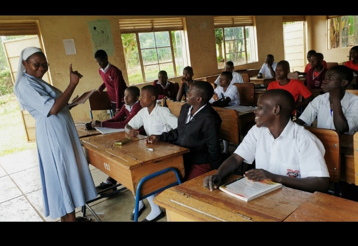
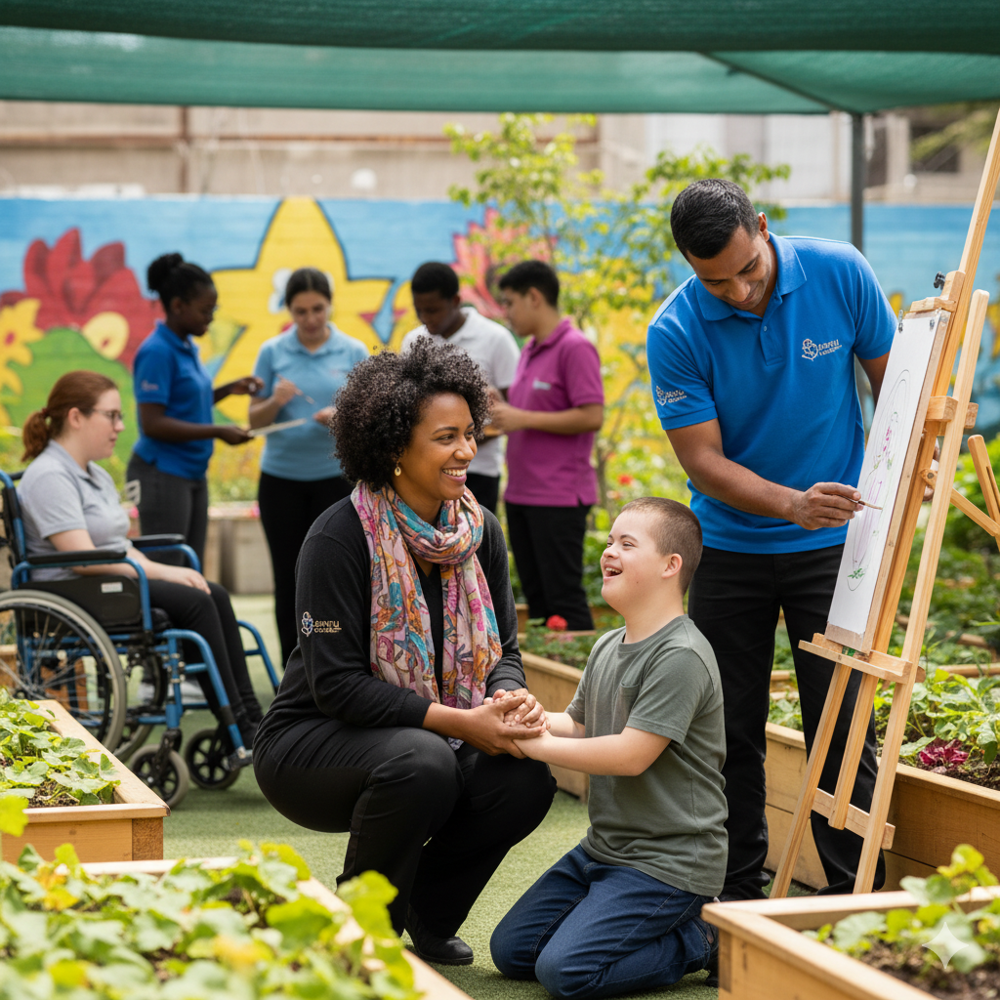

SANYU DISABLED PEOPLE HOME is a private charity organisation which is trying to provide educationto disabled children which was formed on 2nd February 2020.SANYU brings together all categories of disabilities including the physical ,sensory,intellectual and mental impairements which means disability is not inability.
" Our focus is on education ,empowerment,and creating opportunities for independence and we believe in equality ,dignity,and inclusion for everyone."
"A Just and fair society where persons with Disabilities live a prosperous and dignified life"
It is made up of passionate educators,devoted parents and management who work together to create a supportive and inclusive environment for all .Our educators bring knowledge ,patience and innovation to help the children with disabilities reach their full potiential and parents and our parents try to shape our programs through love ,care ,and understanding of each child's unique needs. Our management ensures smooth coordination ,strategic growth ,and sustainability of our mission.
 